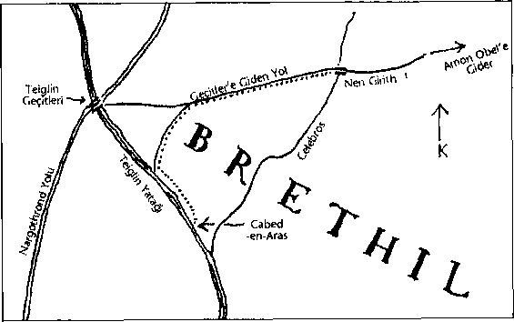

(2)
Çeyrek yüzyıldan fazla zaman önce yayımlanmış olan Bitmemiş Öyküler’de, elfçe Narn i Chîn Húrin, yani Húrin’in Çocukları’nın Hikayesi başlığına atıfla Narn olarak bilinen bu hikayenin uzun versiyonundan bir metin yayımladım. Ama bu, farklı farklı içeriklere sahip büyük bir kitaptaki tek bir unsurdu ve metin, kitabın genel amacına ve tarzına uygun bir biçimde, çok eksikti: çünkü, Narn metni ile Silmarillion’daki daha kısa versiyonu çok benzer olduğundan, ya da belirli bir “uzun” metin verilemeyeceğine karar verdiğimden, bazı önemli pasajları (içlerinden biri oldukça uzundu) çıkarmıştım.
Bu yüzden, bu kitapta, Narn’ın biçimi ayrı ayrı açılardan Bitmemiş Öyküler’deki metinden farklıdır. Biçimler arasındaki fark kısmen, o kitap yayımlandıktan sonra, çok daha zorlu bir müsvedde karmaşası üzerinde yürüttüğüm çok daha eksiksiz incelemeden kaynaklanmaktadır. Bu inceleme, bazı metinler arasındaki ilişki ve metin sıralamaları konusunda, özellikle de “Túrin Haydutlar Arasında” zaman diliminde efsanenin son derece kafa karıştırıcı bir biçimde evrimi konusunda, farklı sonuçlara götürdü beni. Húrin’in Çocukları’nın bu yeni metninin tarifi ve açıklaması aşağıdadır.
Bütün bunlarda önemli bir unsur, yayımlanmış olan Silmarillion’un kendine özgü durumudur; çünkü bu Ek’in birinci kısmında belirttiğim gibi, babam 1937’de, Yüzüklerin Efendisi’ne başladığında (Túrin’in Doriath’tan kaçtıktan sonra haydut olduğu noktada) Quenta Silmarillion’u bırakmıştı. Yayımlanmış çalışmanın anlatımını oluştururken, başta adı “Senelerin Hikayesi” olan, ama art arda gelen versiyonlarda büyüyen, genişleyen ve sonraki Silmarillion müsveddelerine paralel, vakayiname tarzı bir anlatıma dönüşen ve Túrin ile Niënor’un ölümlerinden sonra Húrin’in Morgoth tarafından serbest bırakılmasına dek uzanan Beleriand Vakayinamelerinden çok faydalandım.
Bu yüzden, Narn i Chîn Húrin’in Bitmemiş Öykülerdeki versiyonundan çıkardığım ilk pasaj, Húrin ile Huor’un gençliklerinde yaptıkları Gondolin yolculuğu oldu; ve bunu sırf, hikaye Silmarillion'da anlatıldığı için yaptım (s.158-159). Ama babam aslında iki versiyon yazmıştı: içlerinden biri özellikle Narn’ın açılışı için düşünülmüştü, ama Beleriand Vakayinameleri'ndeki bir pasaja dayalıydı ve gerçekten de, başından sonuna, pek az değişir. Silmarillion’da iki metni de kullandım, ama burada Narn versiyonunu kullandım.
Bitmemiş Öyküler’deki Narn’dan çıkardığım ikinci pasaj, Sayısız Gözyaşı Savaşı metnidir ve bu iptal de aynı sebepten yapılmıştır; burada da, babam iki versiyon yazmıştı ve biri Vakayinameler’de yer alır; ve çok daha sonra, ama Vakayinameler’i önüne alarak yazdığı İkincisi, ilkini yakından takip eder. Büyük savaşla ilgili, bu ikinci anlatım, yine, özellikle Narn’ı oluşturacak bir unsur olarak düşünülmüştür (metnin başlığı Narn II’dir, yani Narn’ın ikinci bölümü) ve en başta şunu ifade eder (bu kitaptaki metnin 57. sayfasında): “Bu yüzden, burada yalnızca Hador Evi’nin ve Sadık Húrin’in kaderlerini etkileyen eylemler anlatılacaktır.” Bu amaçla, babam Vakayinamelerden yalnızca “batı savaşı”nın tarifini ve Fingon’un ordusunun yok edilmesini aldı; ve anlatımı bu şekilde sadeleştirip kısaltırken, Vakayinameler’de anlatılan savaşın gidişini değiştirdi. Elbette, ben Silmarillion'da Vakayinameler’i izledim, ama Narn versiyonundan da unsurlar aldım; ama bu kitapta, babamın Narn için uygun bulduğu metni eksiksiz bir biçimde korudum.
Túrin Doriath’ta bölümünden sonra, yeni metin Bitmemiş Öyküler’dekinden oldukça farklı oldu. Burada, çoğu oldukça ham durumda, aynı anlatımsal unsurların farklı gelişim aşamalarındaki hallerini içeren epey metin vardı ve böyle bir durumda, orijinal materyalin nasıl kullanılacağı konusunda farklı bakış açılarına sahip olmak kuşkusuz mümkündür. Bitmemiş Öyküler’deki metni düzenlerken, kendime gerektiğinden daha fazla editoryal özgürlük tanıdığımı düşünmeye başladım. Bu kitapta, orijinal müsveddeleri bir kez daha gözden geçirdim ve metni tekrar oluşturdum, pek çok (genelde önemsiz) yerde orijinal sözcükleri yine ekledim, çıkarılmaması gereken cümleleri ya da kısa pasajları yerine koydum, birkaç hatayı düzelttim ve orijinal metinlerden farklı seçimler yaptım.
Túrin’in hayatının, Doriath’tan kaçışından Amon Rûdh’daki haydut yuvasına kadar, bu döneminin anlatım yapısıyla ilgili olarak, babamın aklında belli anlatımsal “unsurlar” vardı: Túrin’in Thingol’un huzurunda yargılanması; Thingol ile Melian’ın Beleg’e verdiği armağanlar; Túrin’in yokluğunda haydutların Beleg’e kötü davranması; Túrin ile Beleg’in karşılaşması. Bu “unsurları” birbirlerine göre farklı yerlere koyuyor, diyalog pasajlarını farklı bağlamlara oturtuyordu; ama onları kesin bir “plan” —“gerçekten ne olduğunu öğrenmek”— haline getirmekte güçlük çekiyordu. Ama, şimdi açıkça görüyorum ki, epey üzerinde çalıştıktan sonra, haham hikayenin bu kısmını bırakmadan önce, tatmin edici bir yapıya ve sıralamaya ulaşmış; aynı zamanda, Silmarillion'un yayıncısı için düzenlediğim, çok daha kısaltılmış biçiminin de bu görüşe uyduğunu düşünüyorum —tek bir farkla.
Bilmemiş Öyküler’de, metindeki üçüncü bir boşluk bulunmakta: hikaye, sonunda Túrin’i haydutların arasında bulan Beleg’in, onu Doriath’a gitmeye ikna edemediği noktada kesiliyor (yeni metinde s. 130-135) ve haydutların Bodur-cücelerle karşılaştığı zamandan devam ediyor. Burada, boşluğu doldurmak için yine Silmarillion'a başvurdum; orada, Beleg Túrin’e veda eder, Menegroth’a döner ve “orada Thingol’dan Anglachel adlı kılıcı, Melian’dan ise lembas alır.” Ama aslında babamın bunu reddettiğini göstermek mümkündür; çünkü “aslında olan” şudur: Thingol Anglachel’i Beleg’e Túrin’in yargılanmasından sonra, Beleg onu bulmak üzere yola koyulmadan önce vermiştir. Bu yüzden, bu kitaptaki metinde, kılıcın armağan edilmesi o noktaya (s. 108) konmuştur ve orada lembas armağan edilmesinden bahsedilmez. Daha sonraki pasajda, Beleg Túrin’i bulup Menegroth’a döndüğünde, yeni metinde Anglachel’e atıfta bulunulmamaktadır, elbette, yalnızca Melian’ın armağanından bahsedilmektedir.
Bu noktada, Bitmemiş Öyküler’de aldığım, anlatımda parantez açan iki pasajı bu metinden çıkardığımı ifade etmem uygun olur: bunlar Ejder-miğferi’nin Dor-lóminli Hador’un eline geçmesi (Bitmemiş Öyküler) ve Saeros’un soyuydu (Bitmemiş Öyküler). Aklıma gelmişken, müsveddeler arasındaki bağlantı iyice anlaşıldığında, babamın Saeros ismini reddettiği ve yerine Orgol —“dilbilimsel bir tesadüf” eseri, eski İngilizcedeki orgol, orgel (kibir) sözcüğüne denk gelmektedir— ismini koyduğu görülmektedir. Ama artık Saeros’u çıkarmak için çok geç gibi görünüyor.
Bitmemiş Öyküler’de verilmiş haliyle, anlatımdaki ana boşluk yeni metinde, s. 161’den s. 207’ye kadarki kısımda, Cüce Mîm’e Dair bölümünün sonundan itibaren, Yay ve Miğfer Diyarı, Beleg’in Ölümü, Túrin Nargothrond'da ve Nargothrond’un Düşüşü bölümlerinde doldurulmuştur.
“Túrin destanı”nın bu kısmında, orijinal müsveddeler, hikayenin Silmarillion'da anlatılan hali, Bitmemiş Öyküler’deki Narn hikayesinin ekinde toplanmış bağlantısız pasajlar ve bu kitaptaki yeni metin arasında karmaşık bir ilişki vardır. Babamın, zamanı gelince, Túrin’in “büyük hikayesi”sini tatminkar bir biçimde tamamladığı zaman, ondan, "Silmarillion tarzı” daha kısa bir versiyon çıkarmaya niyetlendiğini düşünmüşümdür hep. Ama, elbette, bu olmadı; ben de, bundan otuz sene önce, onun yapmadığı işin benzerini yapmaya çalışmak gibi tuhaf bir işe giriştim: hikayenin en son haline dayanan bir “Silmarillion” versiyonu yazmak, ama bunu “uzun versiyon”un, Narn'ın, heterojen malzemesinden çıkarmak. Bu, yayımlanmış Silmarillion’da, 21. bölümdür.
Dolayısıyla, Bitmemiş Öyküler’deki hikayede bulunan uzun boşluğu bu kitapta dolduran metin, Silmarillion’da buna denk gelen pasajla aynı orijinal metinlerden alınmıştır, ama her iki durumda, farklı amaçlar için kullanılmıştır ve yeni metinde, müsveddeler, notlar ve bunların nasıl sıralandığı daha iyi anlaşılarak düzenlenmiştir. Orijinal metinlerden, Silmarillion’da çıkarılmış ya da kısaltılmış epey malzeme, bu metinde bulunmaktadır; ama Silmarillion versiyonuna ekleme gerekmediği yerlerde (Beleriand Vakayinamelerinden alınmış olan, Beleg’in ölümünün hikayesi gibi) o versiyon tekrarlanmıştır.
Sonuç olarak, farklı müsveddeleri bir araya getirirken, orada burada pasajları birbirine bağlamak zorunda kalsam da, burada sunulan uzun metinde, ne kadar ufak olursa olsun, hiçbir ek “icat” bulunmamaktadır. Yine de metin yapaydır, aksi mümkün değildi: özellikle de, bu büyük metin bütünü, asıl hikayenin sürekli evrimini temsil ettiğinden. Kesintisiz bir metnin oluşumu için gerekli olan müsveddeler, aslında daha erken bir aşamaya ait olabilir. Dolayısıyla, daha önceki bir noktadan örnek vermek gerekirse, Túrin’in çetesinin Amon Rûdh tepesine gelmesi, orada buldukları barınak ve oradaki hayatları ve Dor-Cúarthol diyarının kısa ömürlü başarısı hakkındaki ilk metin Bodur-cüceler ortada yokken yazılmıştı; gerçekten de, Mîm’in zirvenin altındaki evinin tamamen gelişmiş tasviri, Mîm’in kendisinden önce ortaya çıkmıştır.
Hikayenin, babamın bitmiş halini verdiği, Túrin’in Dor-lómin’e dönüşünden sonraki kısmında, doğal olarak, Bitmemiş Öyküler’deki metinle aralarında pek az fark vardır. Ama Glaurung’un Cabed-en-Aras’taki saldırısının anlatımında, benim orijinal sözcükleri değiştirdiğim iki detay vardır ve bunlar açıklanmalıdır.
İlki coğrafyayla ilgilidir. O vahim akşam, Túrin ile yoldaşları Nen Girith’ten yola çıktıklarında (s. 265), doğrudan ırmak yatağının karşı tarafında yatan ejderhaya doğru gitmedikleri, ilk önce Teiglin Geçitlerine giden patikaya döndükleri söylenmektedir; “sonra, çok ilerlemeden, dar bir patikayla güneye döndüler” ve ırmağın üzerindeki ağaçların arasından Cabed-en-Aras’a doğru gittiler. Yaklaşırlarken, orijinal metindeki pasaja göre, “arkalarında, ilk yıldızlar doğuda ışıldıyordu.”
Bitmemiş Öyküler’in metnini hazırladığımda, bunun doğru olamayacağını, çünkü kesinlikle batıya doğru değil, doğuya ya da güneydoğuya, geçitlerden uzağa doğru gittiklerini gözlemlemiştim ve doğudaki ilk yıldızlar arkalarında değil önlerinde olmalıydı. Mücevherlerin Savaşı'nda bunu tartışırken, güneye giden dar patikanın daha sonra batıya dönüp Teiglin’e vardığı fikrini kabul etmiştim. Ama şimdi bu bana imkansız geliyor, çünkü anlatım açısından amaçsız kalıyor ve yeni metinde yaptığım gibi, “arkalarında” sözcüğünü “önlerinde” olarak değiştirmek çok daha basit bir çözüm olurmuş gibi geliyor.
Arazinin durumunu göstermek amacıyla Bitmemiş Öyküler’de çizdiğim taslak harita, aslında yönleri doğru göstermiyor. Babamın, Beleriand haritasında görüldüğü ve Silmarillion için benim çizdiğim haritada tekrarlandığı gibi, Amon Obel Teiglin Geçitlerinin hemen hemen tam doğusunda (“Amon Obel’in arkasında ay yükseldi”, s. 278) ve Teiglin yatağında güneydoğu ya da güney-güneydoğu yönünde akıyor. Taslak haritayı tekrar çizdim ve Cabed-en-Aras’ın yaklaşık yerini de ekledim (metinde, s. 259’te), “Ve orada, Glaurung’un yolunun hemen üzerinde, Celebros adlı kolun hemen kuzeyinde, en dar olmasa da en derin boğazlardan biri duruyordu.”

İkinci mesele, Glaurung’un ırmak yatağındaki geçitte öldürülmesinin hikayesi ile ilgili. Bu konuda, bir müsvedde ve bir nihai versiyon var. Müsveddede, Túrin ve yoldaşları uçurumun diğer yamacına tırmanıp kenara geliyorlar; gece geçerken orada bekliyorlar ve Túrin “tüm iradesini tutunmaya adadığı, karanlık, korkunç düşlerle mücadele ediyor.” Gün doğduğunda, Glaurung Irmağı “pek çok adım kuzeyde”ki bir yerden geçmeye hazırlanıyor ve bu yüzden Túrin, ejderhanın karnının altına girmek için ırmak yatağına inmek ve sonra tekrar yamaca tırmanmak zorunda kalıyor.
Nihai versiyonda (s. 272) Túrin ile Hunthor yamacı yalnızca kısmen tırmanmışlarken Túrin, Glaurung’un nereden geçeceğini bilmeden tırmanarak güçlerini boşa harcadıklarını söylüyor; “bu yüzden durup bekliyorlar.” Tırmanmayı bıraktıklarında aşağı indikleri söylenmiyor ve taslak metindeki, Túrin’in “tüm iradesini tutunmaya adadığı” düşü ile ilgili pasaj yeniden ortaya çıkıyor. Ama gözden geçirilmiş hikayede, tutunmalarına gerek yok: pekala aşağıya inip orada bekleyebilirlerdi ve beklediler de. Aslında, yaptıkları da bu: nihai metinde (Bitmemiş Öyküler), Glaurung’un geçeceği yolda durmadıkları ve Túrin’in “altına gelebilmek için su kıyısı boyunca koşturduğu” söyleniyor. Bu durumda, nihai hikaye önceki taslaktan alınmış, önemsenmemiş bir unsur taşıyor gibi. Duruma tutarlılık kazandırmak için şu şekilde değiştirdim (s. 273): “tam Glaurung’un geçeceği yolda durmadıklarından” sözleri, “tam Glaurung’un yolunda olmadıklarından” oldu; “su kıyısı boyunca koşturdu” sözleri de, “yamaç boyunca koşturdu” oldu.
Bunlar, kendi içlerinde önemsiz meseleler, ama Kadim Günlere dair efsanelerdeki, belki de en keskin şekilde görselleştirilmiş sahneleri ve en büyük olaylardan birini açıklığa kavuşturuyorlar.